How to play
This page takes you through the whole game in the order you will meet it. The game also guides you itself: a card points at what to tap next. You can skip it at any time, and replay it from Settings.
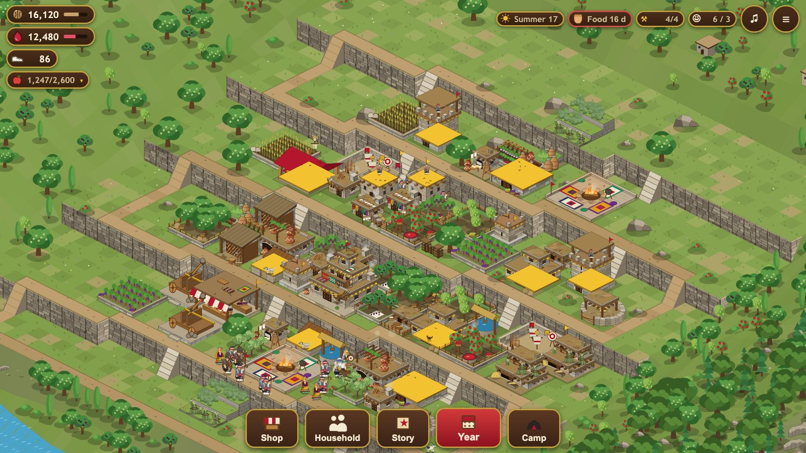
1. Starting
- Open https://hawraman-api-production.up.railway.app/ in a browser, or the app on a phone or tablet. The game plays sideways (landscape): on a phone, turn it; on a computer, a wide window is best.
- Tap Play (later: Continue). Your village stands in one of the places of Hawraman, each with its own land: a green valley, a steep mountainside, a river gorge or an open plain. The menu lets you move to another place.
- Sound starts after your first tap or click. Language, sound, graphics and the tutorials are under the menu button (top right), then Settings.
2. The screen
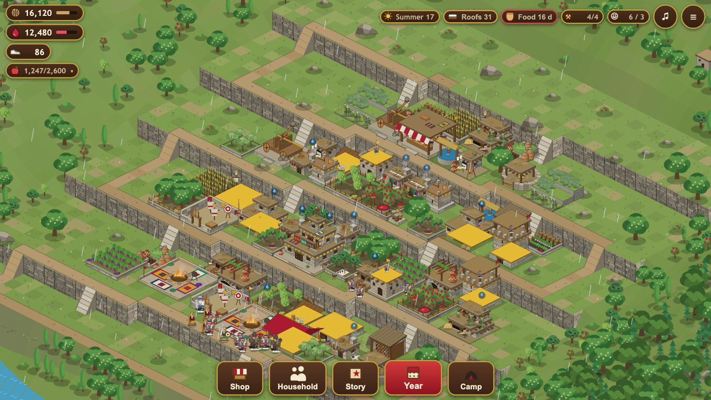
12345678910111213- Walnuts: build currency
- Pomegranate Juice: pays for guard skills and allies
- Klash: finish builds instantly, buy almost anything in the Bazaar
- Trade fruit (stored in the Anbar)
- Season
- Winter stores: food, Lo and firewood
- Builders free / total
- Household: members / on guard
- Menu
- Shop
- Household
- Story
- Year
- Top left: your stores. Walnuts pay for building. Pomegranate Juice pays for skills and allies. Klash, the white shoes, is precious: it finishes work at once and buys almost anything. The fruit pill opens your fruit.
- Top right: the season and day, how many days of food you have, free builders, and your household.
- Bottom: Shop (build things), Household (your family and guards), Story (the history chapters), Year (the calendar, raids, the map, village progress). Tribe appears when you play online, Camp when your Diwan-khana reaches level 3.
- Moving around: drag to move, pinch or use the mouse wheel to zoom.
3. Your first buildings

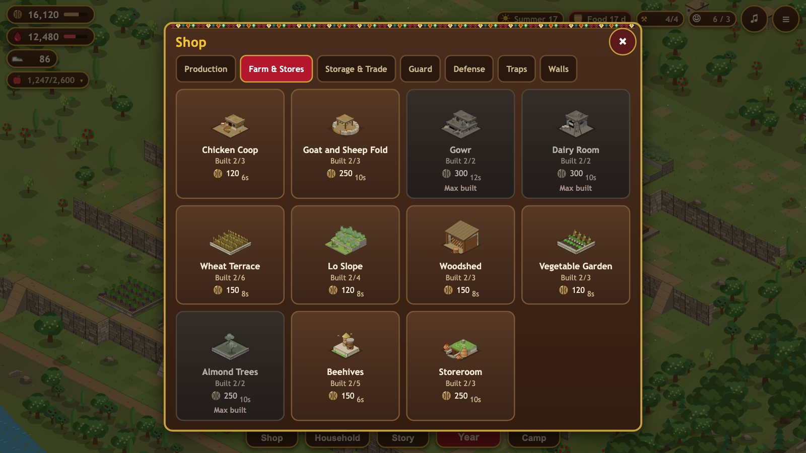

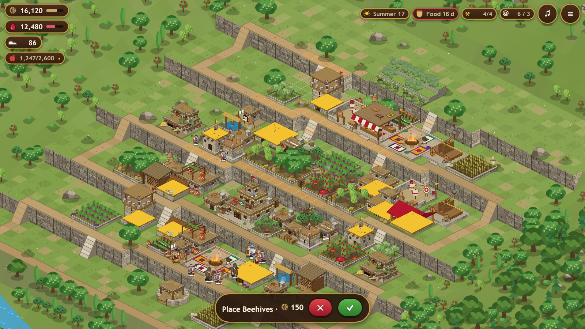

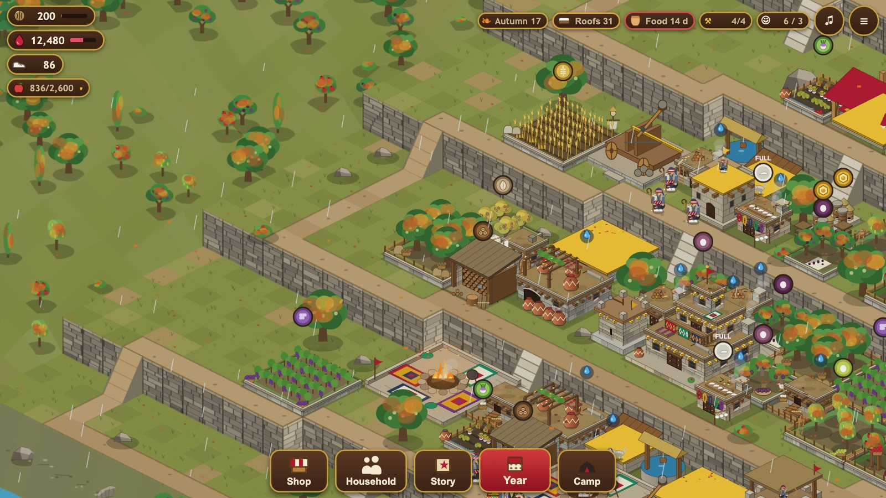

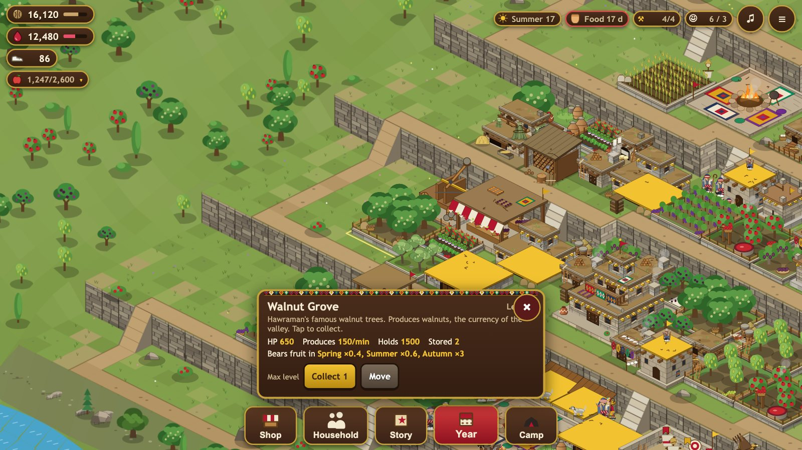
- The big house with the flag is the Diwan-khana, the heart of the village. Its level decides what you may build, and how many of each.
- Tap Shop, pick a farm such as the Wheat Terrace, then tap the ground where it should stand and confirm. Green tiles mean it fits; red means it does not.
- Each Builder's Hut gives one builder, so one building can go up per hut at a time. A building in progress shows its time; Klash can finish it now.
- When a building shows a bubble with a walnut or a fruit, tap it to collect. That tap only collects. Tap a building without a bubble to open its panel: upgrade, move, or read what it does.
- Upgrade the Diwan-khana when you can. Every level opens new buildings and more of the ones you have.
4. Stores fill up
Every store has a limit, shown by the bar under it. When a store is full, collecting adds nothing. Build or upgrade the Walnut Store for walnuts, the Juice Cellar for juice and the Anbar for fruit. The Bazaar sells fruit for walnuts or juice.
5. Your household
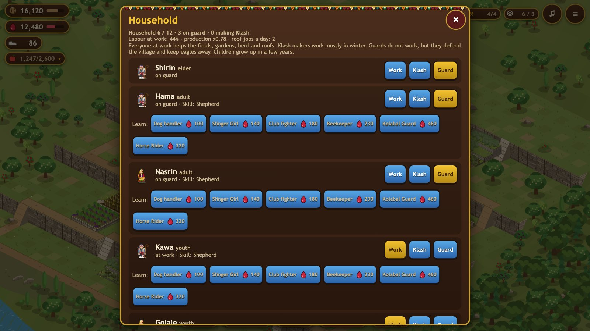
Open Household. Each member of the family has one task: work (more hands make every farm give more), make Klash, or guard. Guards protect the herd and the village and go on raids, but they do not work. More about them: Household.
6. The year and the winter

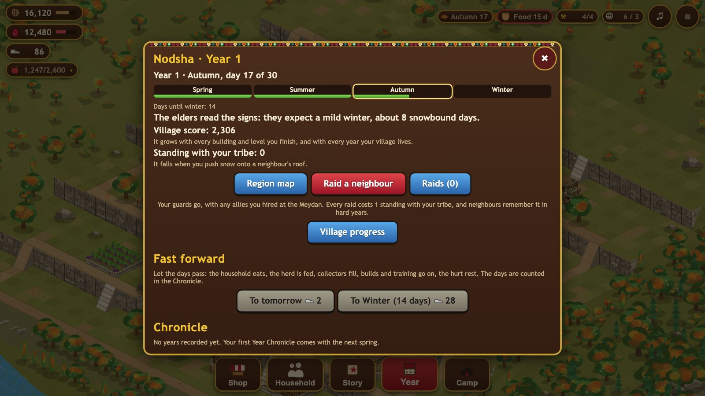


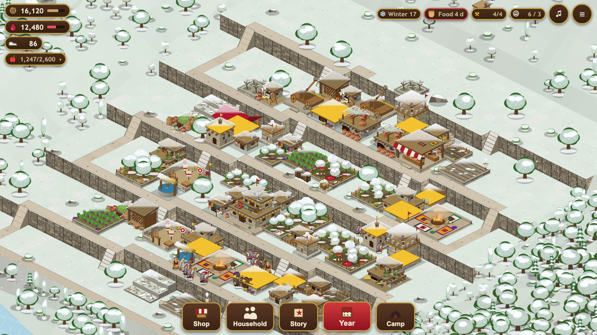
- Open Year. A season lasts one real day and has 30 game days; a year takes four real days. You can let days pass faster for Klash.
- Orchards give most of their fruit in autumn and rest in winter. See Seasons and the year.
- Winter is the test. Snow closes the pass and the family lives on what it stored. Before winter, fill three things: food, fodder for the animals, and firewood. The Stores panel (tap the food pill) shows how many days each will last.
- Animals give eggs and milk, and have young in spring; in winter they need room indoors and fodder. See Animals.
- In winter, watch the roofs: push heavy snow off, and roll the mud roof before rain and melt make it leak.
7. Defending the village
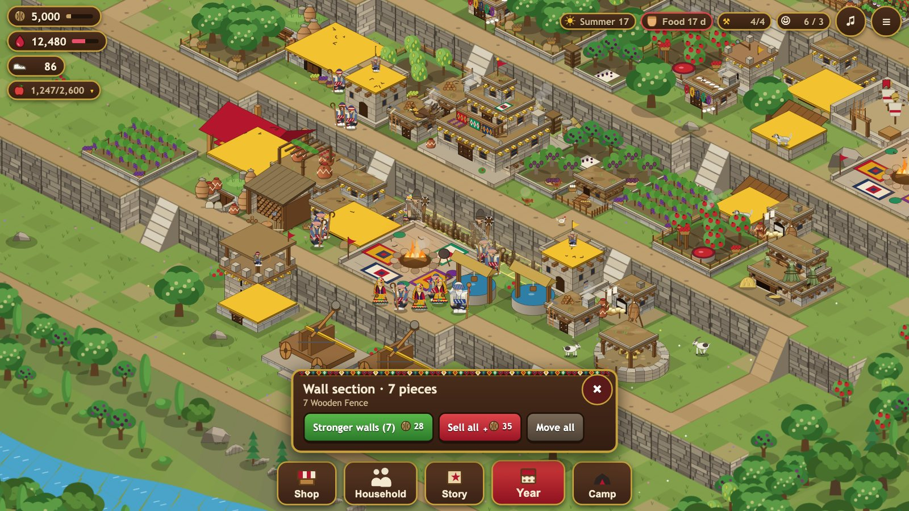
- Wolves come in winter and a bear in late autumn. You get a warning, then a short fight in your own village. Towers, traps and dogs fight by themselves; tap the ground to send your guards where they are needed.
- Neighbours may raid while you are away. Watchtowers, the Guard House, the Kennel, traps and walls all help. See Raids and defence for the raid log and how to answer a raid.
- Walls: pick a wall in the Shop and drag along the ground to lay a row. More under Walls on the raids page.
8. Raiding (if you must)

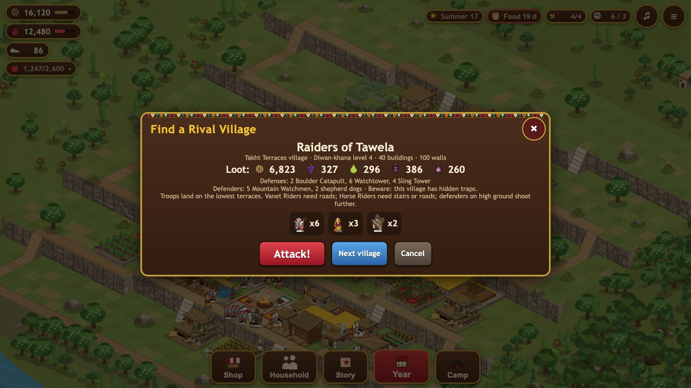

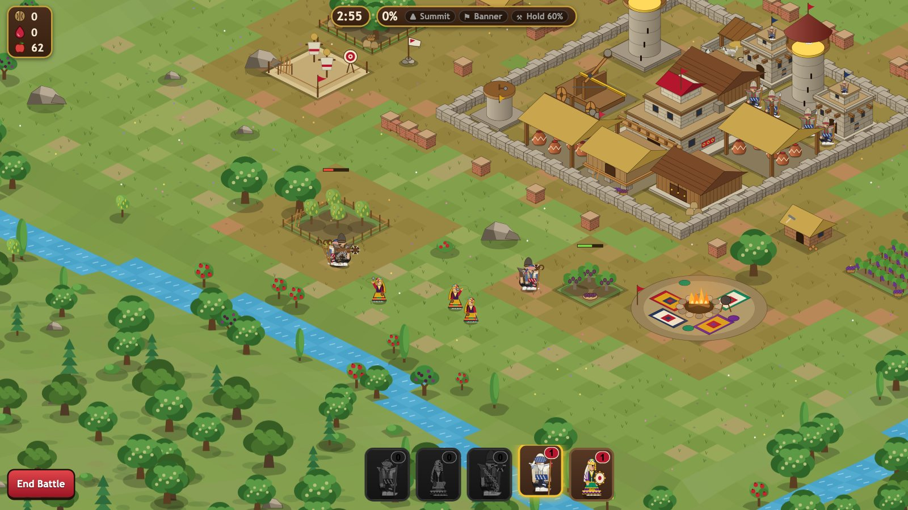
- In Year, tap Raid a neighbour. You see the village, what it holds and how it is defended. Tap Attack!, or look at another one.
- Tap the ground at the edge of their village to send your guards, then any allies you hired at the Meydan.
- Three goals give three stars: reach the summit flag, take the banner (their Diwan-khana), and break most of the village.
- Every raid costs standing with your tribe. A beaten guard comes home hurt and rests for some days.
9. The Summer Camp, the Story
At Diwan-khana level 3 the Camp opens: the high pasture where the herds go in summer, with wool and dairy. Story has chapters from the long history of Hawraman; they are separate from your village and can be played at any time.
10. Playing with others
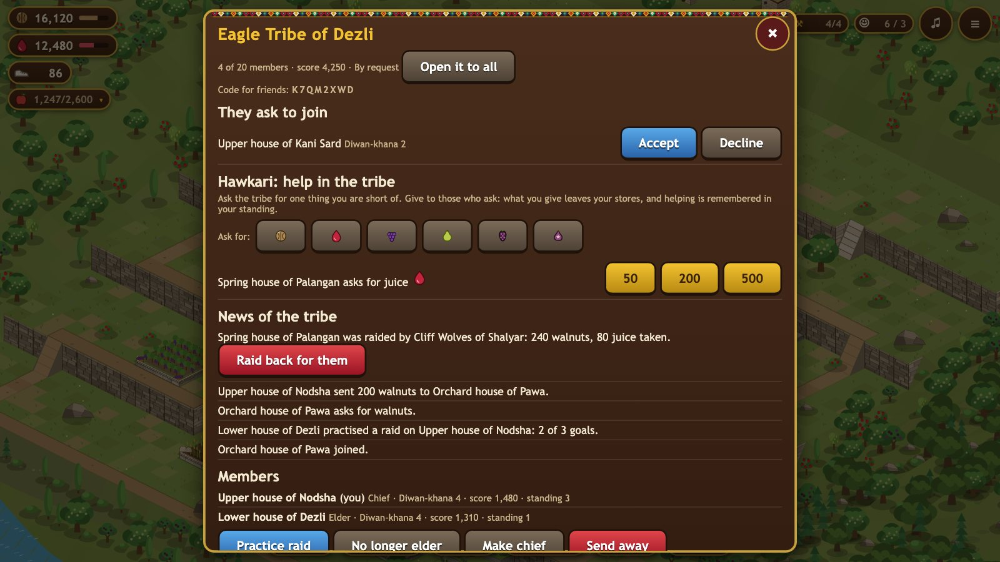
Turn on Play online in Settings to meet real players: their villages become the ones you raid and the ones that raid you, you can join a tribe, and your village can move to another device. See Playing online and Tribes and score.
Questions people ask
- I hear nothing. Tap or click once in the game; check the sound button and Settings.
- My village is gone. A village lives in the browser or app where you made it. Clearing browser data removes it. With Play online on, it is also kept on the server and can be brought back with a code (see Playing online).
- I cannot build more of something. Each building has a limit that grows with the Diwan-khana level. The Buildings page lists them.
- Collecting does nothing. That store is full: build or upgrade its storehouse, or sell fruit at the Bazaar.
- I do not see the Camp or the Tribe button. The Camp needs Diwan-khana level 3; the Tribe button needs Play online.
- The songs. The songs you hear now and then are sung by Osman Hawrami. Settings lets you choose which ones play.